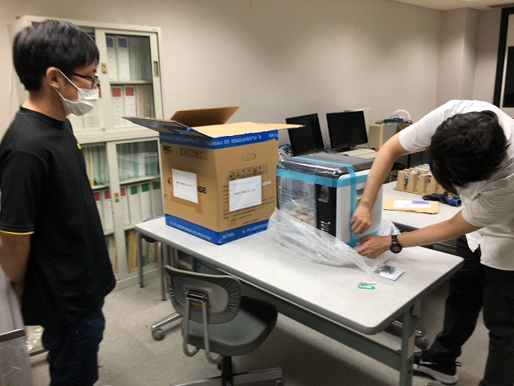
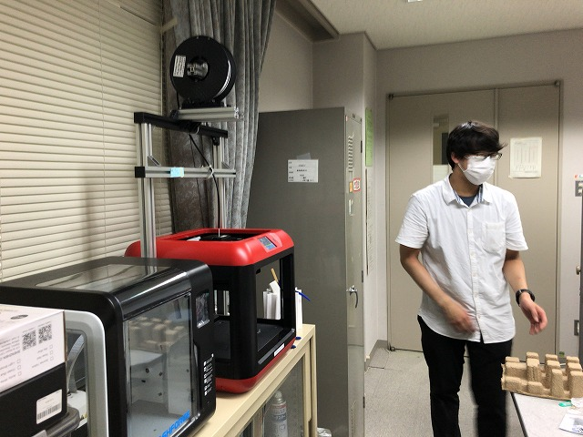
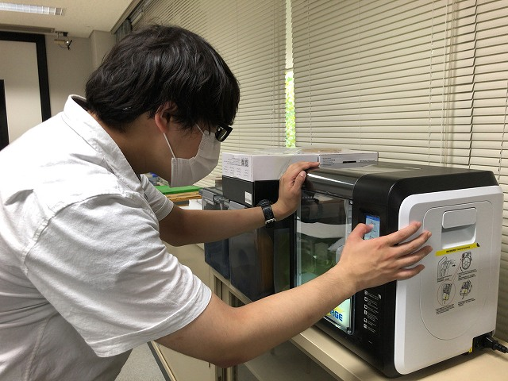
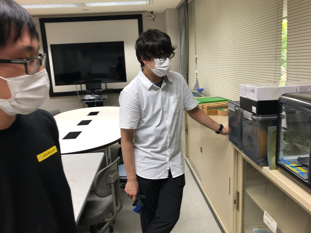
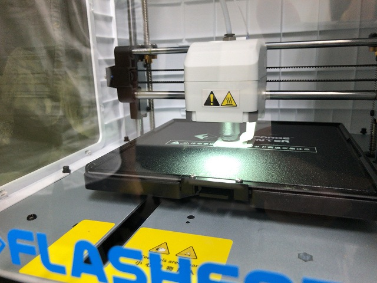
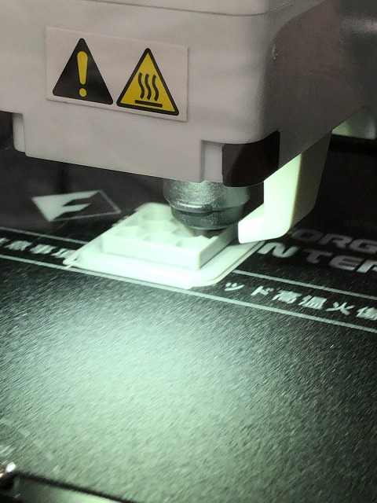

| ・ 3Dプリンタ (R03.07.30) | |||
1台不調になり長期離脱が確定し、穴を埋めるために導入しました。2代目ヒロキ推奨プリンタ。かつて初代曰く「4万くらいの3Dプリンタを2，3年で使い潰してその時の同価格帯で置き換えればOK」でしたが、 その有用性からほぼ全員使い半月24時間稼働させるなどで1年で使い潰してしまいました。ちゃんとしたメーカーのは導入して1年半たっても動いてるし、ちゃんとしたメーカーのを導入。 |
|||
|

組み立てなくて良い。 |

最初に導入の赤いのはまだ稼働 | ||
|

2代目「UIがわかりやすい」 |

おー、速い | ||
|

良い感じ |

1年は保つよね（フラグ | ||